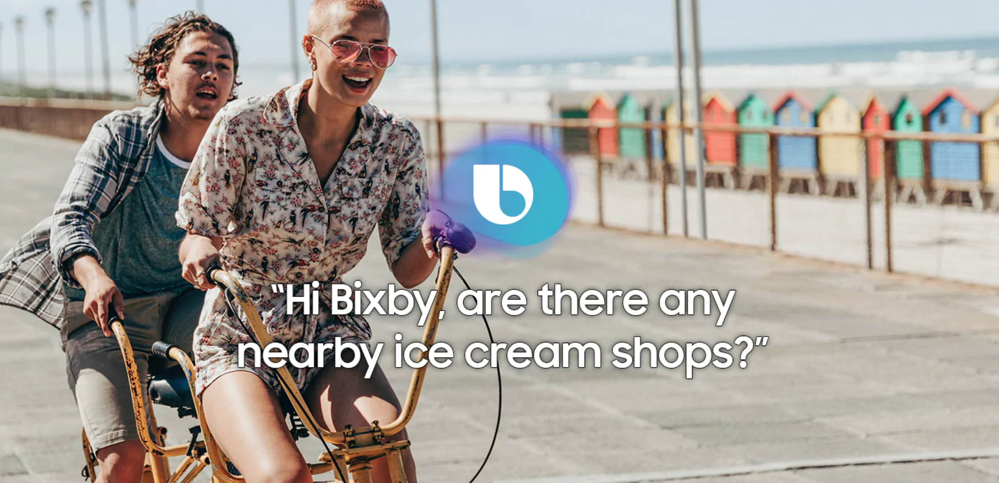

Baidu Maps is a desktop and mobile web mapping service application and technology provided by Baidu, offering satellite imagery, street maps, street view ("Panorama" - zh:百度全景) and indoor view[1] perspectives, as well as functions such as a route planner for traveling by foot, car, or with public transportation. Android and iOS applications are available. As the Front-end Developer this project, we built this app in the Single-page Application Model to provide a more fluid user experience with awesome React.js
Baidu, Inc. (Chinese: 百度; pinyin: Bǎidù, anglicized /ˈbaɪduː/ BY-doo) is a Chinese multinational technology company specializing in Internet-related services and products and artificial intelligence (AI), headquartered in Beijing's Haidian District.[6] It is one of the largest AI and internet companies in the world. The holding company of the group is incorporated in the Cayman Islands. Baidu was incorporated in January 2000 by Robin Li and Eric Xu. The Baidu search engine is currently the fourth largest website in the Alexa Internet rankings.Baidu has origins in RankDex, an earlier search engine developed by Robin Li in 1996, before he founded Baidu in 2000.
Baidu offers various services, including a Chinese search engine, as well as a mapping service called Baidu Maps. Baidu offers about 57 search and community services, such as Baidu Baike (an online encyclopedia) and a keyword-based discussion forum. Vue.js.
Build high-performance web visualization and analysis tools. Implemented 3D visualization applications on the frontier of web technologies, using and developing bleeding-edge tooling.
As a Intern Machine learning Engineer, Achieved deep Learning compression on CNN, RNN and LSTM. Prune away parameters. Compression Algorithms on CNN, AlexNet and VGGNet with ImageNet 35X~50X. including weights sharing and Huffman coding. (TensorFlow, Python, Caffe, Python, Linux) and did visualization.
JS
Innovation Developer

Built front-end tools for data scientists or developers. Attuned design sense so can collaborate with UX designers and hold a high bar with “backend” SDE's. Developed face recognition based on Amazon AWS.
Implemented the diamond-square algorithm and the Blinn-Phong illumination model and Phong shading. Position light source(s) anywhere in the scene as long as the rendered images are well-lit. Shaded the terrain using a colormap related to the height of the vertex. Implemented. A quaternion based viewing system. A user interface that minimally implements the arrow-key and +/- key controls@
As a Intern Motion Graphic Designer, Implemented Blinn-Phong Shading. Implement the required forces: gravity and friction. Used Euler Integration to compute new particle positions. Correctly tested for sphere-wall collisons. You are not required to check for sphere-sphere collisions.